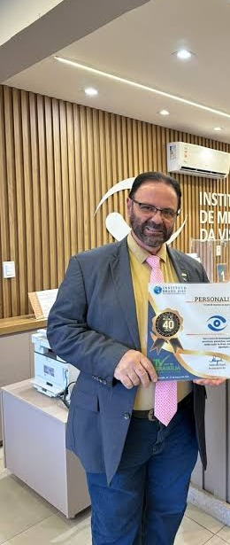

Paraná reúne gastronomia, festivais e esporte na agenda de novembro
A Secretaria do Turismo do Paraná divulgou um calendário de novembro com eventos em diferentes regiões do estado.
Ler reportagem completa →Primeiro dia de provas encerrado. Segunda etapa em 15 de novembro. O Inep prevê divulgar o gabarito até o 10º dia útil depois dessa etapa. Confira as datas e a cor do seu caderno.
Destinos, hospedagem e sabores do Brasil.
VOZ NEWS BRASIL · 04/11/2026
A Secretaria do Turismo do Paraná divulgou um calendário de novembro com eventos em diferentes regiões do estado.
Ler reportagem completa →Seleção revisada em 02/11. 0 fatos confirmados de 02/11 até esta edição. Uma análise editorial publicada hoje com data original da fonte e quatro reportagens anteriores preservadas. Cada chamada abre uma página interna completa.

Faturamento de janeiro a setembro atingiu R$ 11,07 bilhões, segundo dados divulgados em 27/10.
LER REPORTAGEM COMPLETA →Reportagem de arquivo com data original preservada.
LER REPORTAGEM COMPLETA →Reportagem de arquivo com data original preservada.
LER REPORTAGEM COMPLETA →Reportagem de arquivo com data original preservada.
LER REPORTAGEM COMPLETA →Reportagem de arquivo com data original preservada.
LER REPORTAGEM COMPLETA →Ministério do Turismo estima mais de 10,3 mil voos entre 30/10 e 3/11; projeção favorece hotelaria e serviços.
LER REPORTAGEM COMPLETA →
Seleção revisada em 01/11. Os fatos têm datas próprias nas reportagens; conteúdo de dias anteriores não foi apresentado como notícia ocorrida hoje. Por Redação Voz News Brasil.
Faturamento cresceu 7,41% em relação ao mesmo período de 2025, segundo o Ministério do Turismo.
LER REPORTAGEM COMPLETA →
Mais quatro reportagens da edição anterior, com datas preservadas:
Dados divulgados em 27/10 indicam recorde no período.
LER MATÉRIA →FONTE 27/10/2026Faturamento cresceu 7,4% em relação ao ano anterior.
LER MATÉRIA →FONTE 27/10/2026Evento será realizado em 3 de novembro com educadores e nutricionistas.
LER MATÉRIA →FONTE 27/10/2026Apuração envolve movimentação de bebidas sem documentação fiscal.
LER MATÉRIA →Gastos internacionais cresceram 10% frente ao mesmo período de 2025.
LER REPORTAGEM COMPLETA →
Mais quatro reportagens verificadas, mantidas com suas datas originais:
Dados divulgados em 27/10 indicam recorde no período.
LER MATÉRIA →FONTE 27/10/2026Faturamento cresceu 7,4% em relação ao ano anterior.
LER MATÉRIA →FONTE 27/10/2026Evento será realizado em 3 de novembro com educadores e nutricionistas.
LER MATÉRIA →FONTE 27/10/2026Apuração envolve movimentação de bebidas sem documentação fiscal.
LER MATÉRIA →Balanço publicado em 28/10 apresenta iniciativas para empreendedores e comunidades.
LER MATÉRIA →
Dados divulgados em 27/10 indicam recorde no período.
LER MATÉRIA →FONTE 27/10/2026Faturamento cresceu 7,4% em relação ao ano anterior.
LER MATÉRIA →FONTE 27/10/2026Evento será realizado em 3 de novembro com educadores e nutricionistas.
LER MATÉRIA →FONTE 27/10/2026Apuração envolve movimentação de bebidas sem documentação fiscal.
LER MATÉRIA →Evento será realizado em 3 de novembro com educadores e nutricionistas.
LER MATÉRIA COMPLETA →
Apuração envolve movimentação de bebidas sem documentação fiscal.
LER MATÉRIA →FONTE 20/10/2026MDIC informa regras para carne, mel, milho e suco de maçã.
LER MATÉRIA →FONTE 02/10/2026Norma do MDIC detalha procedimentos do acordo Mercosul–EFTA.
LER MATÉRIA →FONTE 28/06/2026Dados do Ministério do Turismo apontam crescimento em relação a 2025.
LER MATÉRIA →Restaurantes, chefs, histórias, sabores do Cerrado, avaliações e receitas reais. Uma gastronomia que se vê, se ouve, se experimenta e também é feita pelo público.
Três hotéis reais em Brasília, Rio de Janeiro e São Paulo, com acesso direto aos seus sites oficiais.


Ícone modernista projetado por Oscar Niemeyer, às margens do Lago Paranoá, com obras de Athos Bulcão e o Oscar Restaurante.


Hotel histórico em frente à Praia de Copacabana, na Avenida Atlântica, com hospedagem, gastronomia, eventos e experiências no Rio de Janeiro.
Hotel de luxo na Cidade Matarazzo, na Bela Vista, reunindo hospitalidade, arte, gastronomia, bem-estar e arquitetura em São Paulo.
Olhar para o sabor também é olhar para memória, comportamento e pertencimento. Cada matéria passa a ter avaliação e comentário para aproximar o leitor da experiência.
“A comida também conta quem somos.”
Brasília tem restaurantes, feiras, balcões e histórias que merecem ser mostrados com imagem, movimento e opinião. O guia ganha uma leitura mais humana e comercial.
“Cada mesa tem uma história.”A Voz News mostra primeiro anunciantes e parceiros cadastrados; em seguida amplia a pesquisa com restaurantes públicos da localidade.
Fotos grandes, avaliação editorial e caminho comercial direto. O restaurante anunciante ganha prioridade visual e, ao clicar, o leitor abre sua página ou anúncio.
Três restaurantes reais de Brasília, com fotos e acesso direto aos canais oficiais.


Às margens do Lago Paranoá, a unidade reúne cardápio de frutos do mar, áreas para eventos, happy hour e estrutura para famílias.


Steakhouse com cortes de carnes, sushi, frutos do mar, coquetéis e ambiente de inspiração americana no Brasília Shopping.


No Iguatemi Brasília, combina clássicos da casa com menu inspirado na Toscana, além de terraço, salão e ambientes para diferentes ocasiões.
Preço, apresentação, ambiente, sobremesa, lanche, música, tecnologia, porção e o que realmente faz um adolescente querer voltar. Lucas Ferraz e Sofia Martins passam a integrar a página como avaliadores jovens.
Vai observar experiência, sabor, apresentação, opções jovens, ambiente e se o restaurante conversa de verdade com a nova geração.
Vai avaliar visual, ambiente, variedade, bebidas sem álcool, doces, atendimento e os lugares que merecem ser compartilhados nas redes.

Além do sabor, a avaliação jovem mede tamanho, montagem, acompanhamentos, preço e ambiente.

Textura, apresentação e aquele detalhe que faz o prato virar foto, vídeo e conversa.

Cardápios variados e ambientes que funcionam para amigos, família e comemorações.

Um complexo gastronômico com muitas cozinhas e experiências. No novo guia, anunciantes têm presença premium, fotos, comentário editorial e acesso direto pelo resultado de busca.
Não apenas o nome do ingrediente. Cada sabor ganha imagem, breve história e contexto para o leitor reconhecer o fruto antes de encontrá-lo no prato.

Fruto emblemático do Centro-Oeste, de aroma intenso e polpa amarela. É presença histórica em arroz, galinhada, molhos e cozinhas de Goiás, Minas e do entorno de Brasília.
O caroço tem espinhos internos: a tradição ensina a comer raspando a polpa com cuidado.
Semente da árvore Dipteryx alata, o baru é tostado e usado em doces, farofas, massas, pestos e receitas autorais. Ganhou espaço na gastronomia pela crocância e pela ligação direta com o Cerrado.
Valorizar o baru também cria mercado para cadeias produtivas do bioma.
Fruto de palmeira associado às veredas. A polpa aparece em doces, sorvetes, bebidas e preparações que transformam biodiversidade em experiência gastronômica.
É um dos símbolos das paisagens úmidas dentro do Cerrado.
Fruta nativa de sabor doce e levemente ácido, muito usada em sucos, geleias, sorvetes e criações contemporâneas.
O próprio nome popular carrega a fama de efeito laxativo quando consumida em excesso.
Palmito de sabor marcadamente amargo, muito usado na cozinha goiana. É ingrediente de empadões, refogados e pratos que preservam uma assinatura regional.
O amargor não é defeito: é justamente parte de sua identidade.
Pequeno, aromático e ligado à cozinha tradicional de Goiás. Pode virar sucos, doces, compotas e sobremesas com forte identidade regional.
Um ingrediente que conecta paisagem, memória e cozinha.A página passa a mostrar pessoas cozinhando, detalhes de cozinha, pratos sendo finalizados e degustações — com mídia em movimento, não apenas imagens paradas.


Vídeo demonstrativo: Lokk1y, “Cooking Plov”, Wikimedia Commons, CC BY-SA 4.0. Conteúdos próprios e enviados pelo público poderão substituir os demonstrativos após aprovação editorial.
Chefs, empresários, cozinheiros, produtores e anfitriões que ajudaram a criar a reputação gastronômica da capital.
“Gastronomia organiza memória, encontro e pertencimento. A matéria fica mais completa quando, além de informar, ajuda o leitor a entender a experiência.”
“Os restaurantes tradicionais e os novos empreendimentos contam duas Brasílias ao mesmo tempo: a cidade que preserva histórias e a cidade que experimenta.”
Da Amazônia ao Pampa, a Voz News Gastronomia acompanha ingredientes, restaurantes, turismo gastronômico, produtores, festivais e negócios de alimentação.

Chefs valorizam biomas, produtores e técnicas locais para construir uma gastronomia brasileira cada vez mais reconhecível.
Mercados, restaurantes, cozinheiras tradicionais e festas populares transformam comida em roteiro de viagem.

Hospitalidade, design, serviço, reputação digital e consistência passam a valer tanto quanto o prato.
A capital diplomática do Brasil é uma janela para cozinhas internacionais. A busca do guia também permite procurar restaurantes em outros destinos.

Uma das cozinhas mais influentes do mundo continua moldando restaurantes e hábitos no Brasil.
BUSCAR RESTAURANTES
Do sushi ao kaiseki, a cozinha japonesa segue como referência mundial de disciplina e apresentação.
BUSCAR RESTAURANTES
Use a busca mundial da Voz News para descobrir restaurantes por nome ou tipo de cozinha.
ABRIR BUSCA GLOBALEventos viram cobertura, vídeo, relacionamento comercial e conteúdo permanente.
Menus especiais, novos públicos e uma vitrine recorrente para restaurantes do Distrito Federal.
LER MATÉRIA →Feiras do DFTorre de TV, Ceilândia, Núcleo Bandeirante e outros espaços onde comida, cultura e comércio se encontram.
LER MATÉRIA →Festivais do CerradoIngredientes nativos, produtores, chefs e sustentabilidade conectam território e inovação.
LER MATÉRIA →O público deixa de ser apenas leitor. Pode enviar história, receita, fotos e vídeo. A equipe avalia, edita e escolhe os conteúdos que entram no portal e nas redes.
Reportagem, entrevista, vídeo, fotografia, anúncio premium, cobertura e prioridade no Guia Voz News Gastronomia. O objetivo é transformar visibilidade em descoberta e descoberta em visita.
ANUNCIAR NA VOZ NEWS GASTRONOMIADestinos, hotéis, restaurantes e experiências. Conteúdo especializado, imagem em cada matéria e oportunidades de publicidade.

Acompanhe as decisões, dados, consequências econômicas e desafios do setor a partir das informações disponíveis nos canais oficiais.
ACOMPANHAR FONTE OFICIAL →
Consulte as informações atualizadas na fonte pública e acompanhe os impactos para empresas, profissionais e cidadãos.
ACOMPANHAR FONTE OFICIAL →
Consulte as informações atualizadas na fonte pública e acompanhe os impactos para empresas, profissionais e cidadãos.
ACOMPANHAR FONTE OFICIAL →
Consulte as informações atualizadas na fonte pública e acompanhe os impactos para empresas, profissionais e cidadãos.
ACOMPANHAR FONTE OFICIAL →
Consulte as informações atualizadas na fonte pública e acompanhe os impactos para empresas, profissionais e cidadãos.
ACOMPANHAR FONTE OFICIAL →Pautas editoriais permanentes, não manchetes datadas. Fontes oficiais vinculadas; publicação automática diária ainda não validada.


Entrevistas reais e acompanhamento editorial do setor.
VER ACERVO OFICIAL →Entrevistas reais e acompanhamento editorial do setor.
VER ACERVO OFICIAL →Entrevistas reais e acompanhamento editorial do setor.
VER ACERVO OFICIAL →
Projeto de edição especial com 1.000 páginas e tiragem planejada de 1 milhão de exemplares. Reserve espaço para sua organização.
RESERVE SEU ESPAÇO →